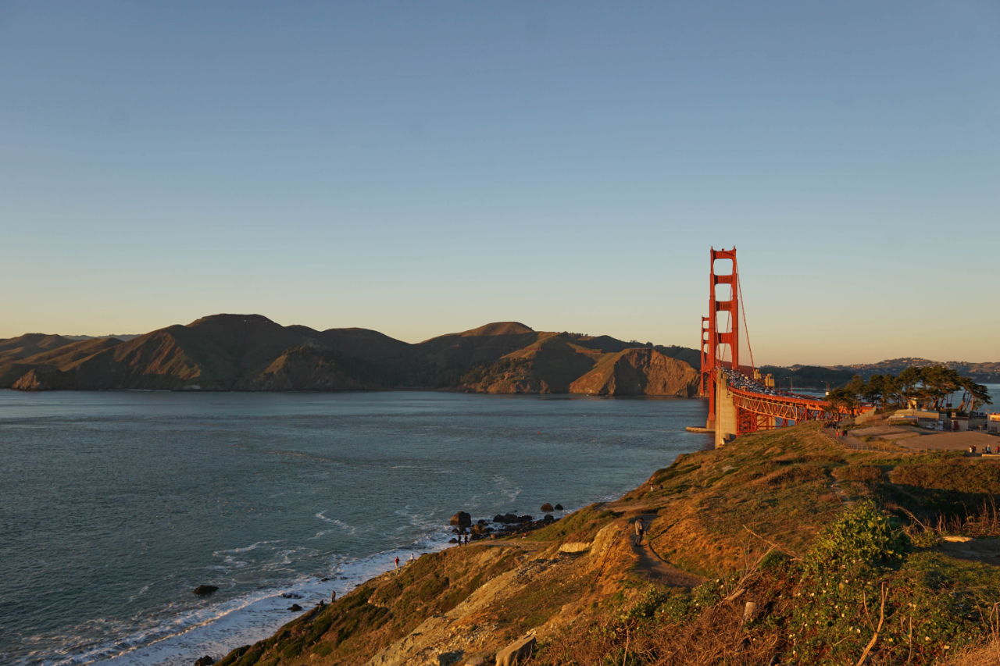
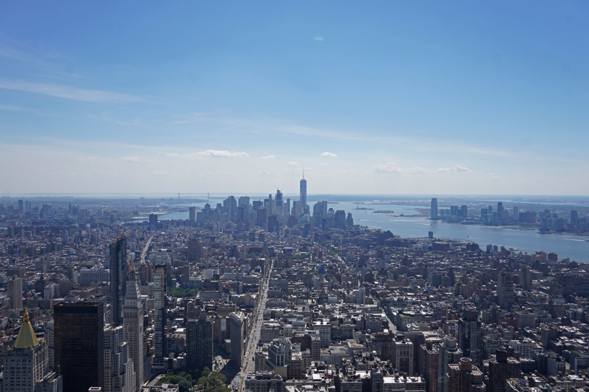

- Hunt for the World's Best Views
- Selected landscape photos from hikes and travels.
- Drawn Views
- Ink and watercolor paintings of various landscape photos I have previously taken.
- RPi Alexa
- Implementing Amazon's cloud-based voice service, Alexa, on a Raspberry Pi.
- Automated Email
- Programmed an automated email response system with camera integration.
- Website
- Programming my own website from scratch.
- Country Flags
- Attaching the patches of country flags to a suitcase of mine.
Hunt for the World's Best Views
Around 2012 I began an effort to capture landscape views from various hikes and travels. Most of these photos come from hikes in California or my time in New York. Other photos are from travels around the U.S. and the world. More photos can be found on my tumblr blog at best-views.tumblr.com.

A sunset view of the Golden Gate Bridge from Battery Godfrey in San Francisco, California.

A view of lower Manhattan from the top of the Empire State Building in New York City on a clear summer's day.
A beautiful view looking towards the Marin Headlands from McNee Ranch State Park, CA.

Looking down one of the many canyons near Junction View on highway 180 in Kings Canyon National Park, CA.
Drawn Views
In order to create meaningful birthday gifts for my friends without spending a lot of money, I decided to make something for them. I chose to draw and watercolor 4 inch by 6 inch framed pieces based on previous photos I had taken that had a connection to the specific friend I was making it for. In this way the piece could be tailored to the specific friend, maintain a minimalist presence, and be built off my previous work. In this project I show the image the piece is based off, the drawing, and the final watercolor. More pieces from this project can be found on my tumblr blog at drawn-views.tumblr.com.

A view up Fifth Avenue in New York City for my Best Views project.
The previous photo was then used to make this ink drawing.
The ink drawing was then watercolored to produce this final piece in its frame.
RPi Alexa
Access to a basic version of Amazon's Alexa serivce is available for free through Amazon Developer Services. I implemented this tool on my own Raspberry Pi, with a microphone and speaker attached.
Walkthrough page to come soon.
Automated Email
I wrote some programs that can automatically read and respond to your emails. There are many possible uses for types of programs including automated responses to specific messages, being able to control and get notifications on processes being run on remote computers, and pre-written emails scheduled to be sent later.
Some basic examples for your configuration purposes are on my GitHub repository at github.com/KEYS248/simple-email-parsing.